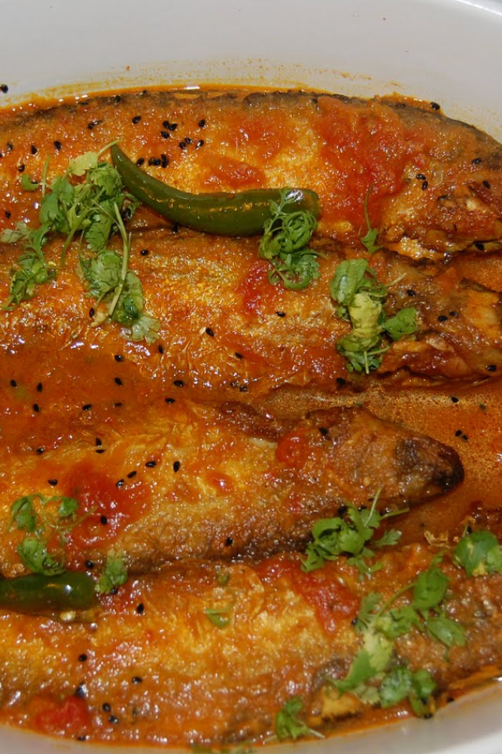
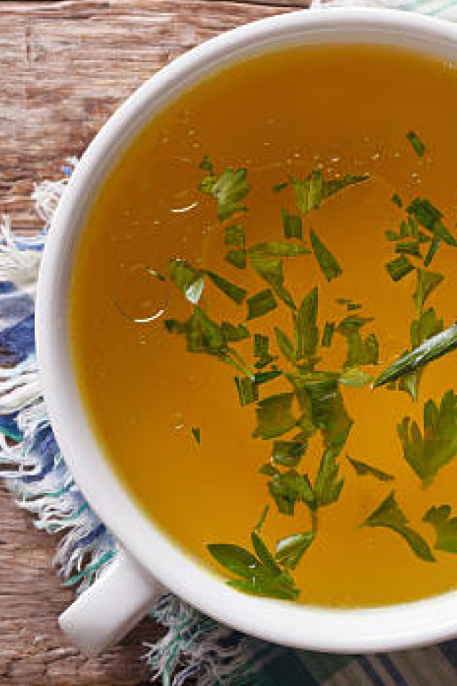

Individual vegetarian lasagnes

Vegetarian Stir-Fried Garlic Scape

Cheat’s cheesy focaccia

Vegetarian Shepherd's Pie

Chicken Paprikash

Baked Chicken

Deep Fried Fish Bones

Burnt-Scallion Fish

Curry-Crusted Fish
Meat Stock

Homemade Meat Broth
Spice-Rubbed Grilled Flap Meat (Sirloin Tip) Recipe